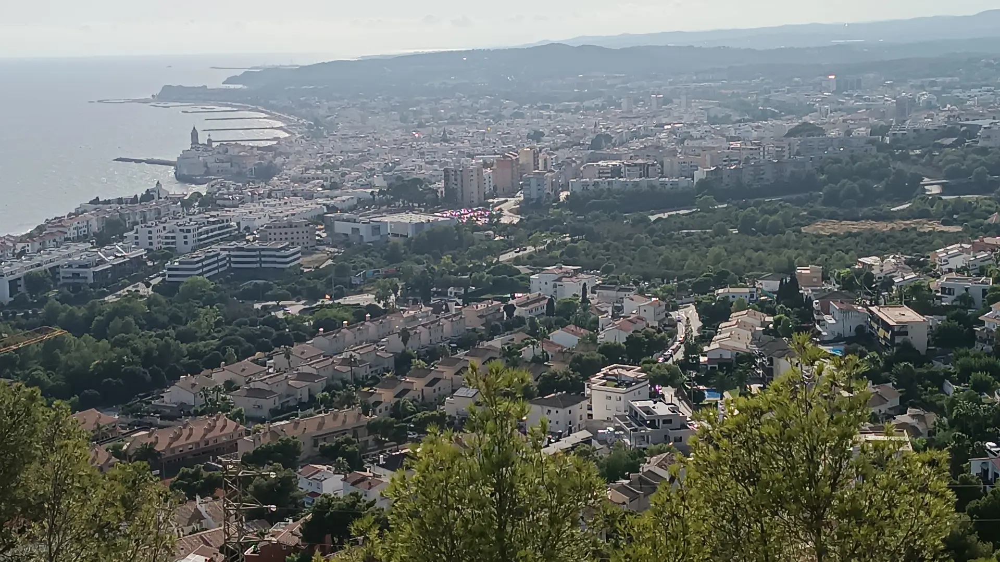
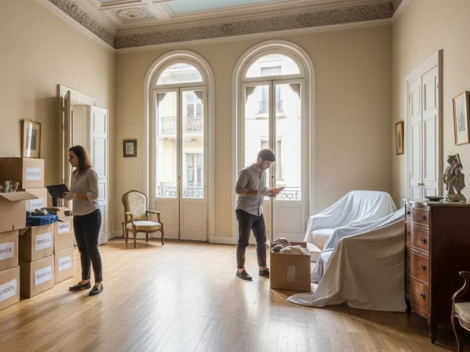
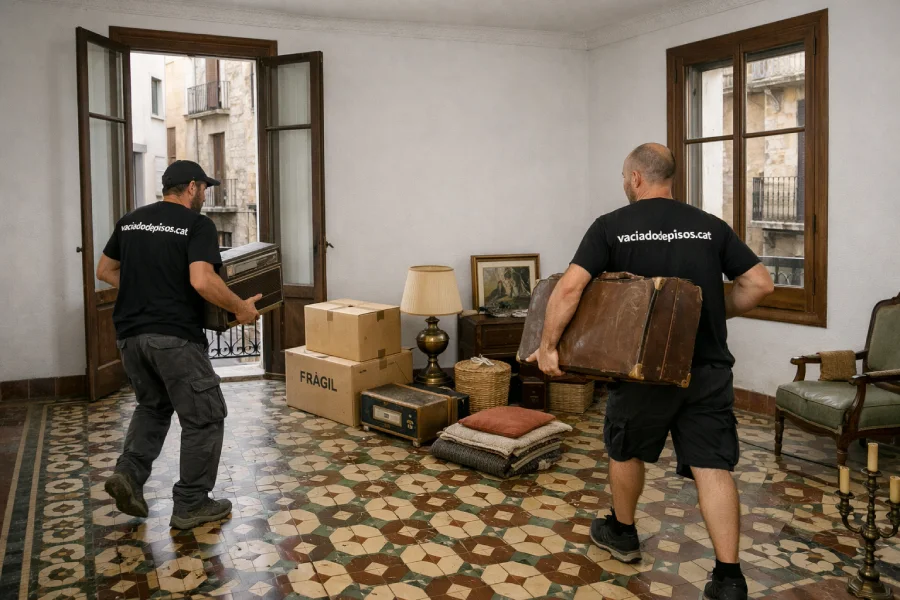
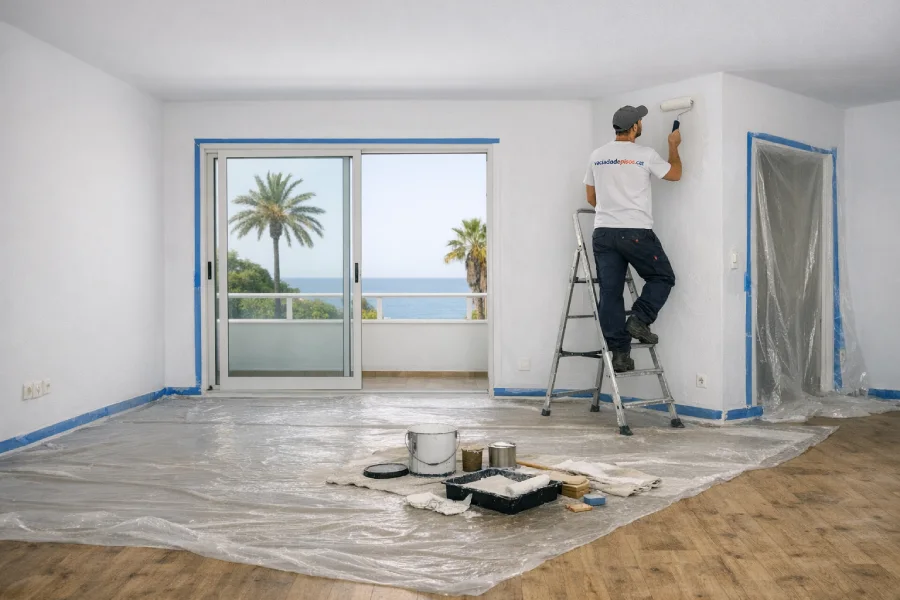
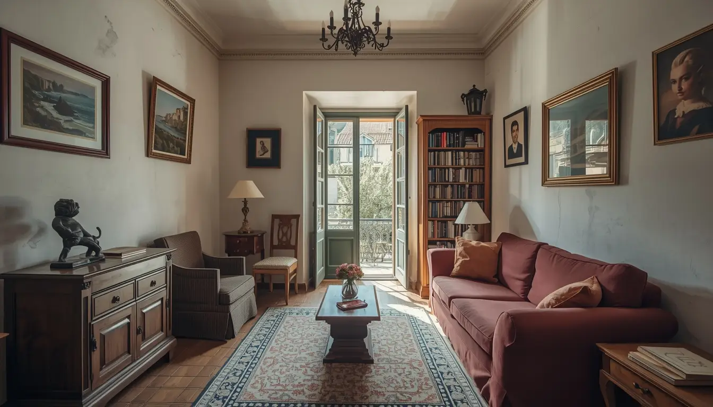

Sitges · Sant Pere de Ribes · Garraf
Vaciado de pisos en Sitges
como solo un local puede hacerlo
Somos de aquí. Conocemos cada calle, cada comunidad y cada necesidad de la ciudad. Especialistas en segunda residencia, propiedades vacacionales y zonas con restricciones.
Servicio local
No somos una empresa de fuera que viene ocasionalmente
Vivimos aquí, trabajamos aquí y conocemos cada particularidad de la ciudad. Sabemos qué calles son peatonales, dónde se puede aparcar un camión, cómo funciona la administración de cada comunidad y qué materiales aguantan mejor la salinidad del mar.
Entendemos los ritmos, las particularidades y las personas clave de cada barrio. Coordinamos con administradores de fincas, seguridad de urbanizaciones e inmobiliarias locales. Y cuando hay un problema, lo resolvemos sin llamadas intermedias: nosotros mismos.

Foto del equipo en Sitges
Conocimiento profundo
Lo que sabemos de Sitges que otros no saben
Cuatro particularidades que marcan la diferencia en cada trabajo que hacemos aquí.
Calles y accesos
Sabemos qué calles son peatonales, cuáles tienen restricciones de tonelaje y dónde se puede aparcar un camión sin problemas. Tenemos experiencia directa en Parellades, Sant Gaudenci, Davallada y Bosc. Tramitamos permisos municipales cuando hace falta.
Humedad y salinidad
La cercanía al mar deteriora muebles y acabados más rápido. Durante el vaciado protegemos suelos y paredes con materiales específicos. Asesoramos sobre pinturas antihumedad y tratamientos para madera para las propiedades del paseo marítimo y la Ribera.
Normas de urbanizaciones
Conocemos las restricciones de Terramar, Vallpineda, Garraf, Les Botigues y Can Girona porque trabajamos en ellas a diario. Sabemos los horarios de carga y descarga, los días permitidos y los contactos de cada administrador. Nunca hemos tenido una queja de una comunidad.
Ritmos estacionales
En verano coordinamos el trabajo respetando la alta ocupación y el ruido de vecinos. En invierno ofrecemos mantenimiento preventivo para propiedades que quedan vacías. Nos adaptamos al calendario de cada propietario, incluidos los que viven fuera de España.
Servicios
Lo que hacemos en Sitges
Servicios adaptados a las necesidades de una ciudad turística con alta proporción de segunda residencia y propiedades vacacionales.



Vaciado por defunción
Gestión sensible en momentos difíciles. Conocemos los trámites locales y trabajamos con máxima discreción en toda la ciudad. Acompañamos a las familias en el proceso con empatía y respeto, aliviando la carga emocional y burocrática.
Ver guía completaLimpieza por síndrome de Diógenes
Protocolos especializados con equipos de protección completos, desinfección con productos hospitalarios y ozonización. Gestionamos los residuos como peligrosos según la normativa de la Agencia de Residuos de Cataluña. Máxima discreción y sensibilidad.
Ver protocolo de limpieza DiógenesPreparación para alquiler vacacional
Pack completo para propietarios vacacionales: vaciado de muebles viejos, limpieza integral, pintura con colores neutros, reparaciones menores y sustitución de iluminación por LED. Coordinamos con la inmobiliaria que gestiona el alquiler y dejamos la propiedad lista para las fotos del anuncio.
Saber másPintura y reparaciones en zona costera
Pintura adaptada a propiedades cerca del mar con materiales resistentes a humedad y salinidad. Incluye preparación de superficies, tratamiento antihumedad y acabado de alta calidad. También fontanería, electricidad y carpintería básica con proveedores locales de confianza.
Saber másGestión inmobiliaria y venta
No solo vaciamos, también gestionamos la venta o alquiler a través de nuestra red de colaboradores locales. En algunos casos ofrecemos vaciado sin coste si la propiedad se vende con nuestras inmobiliarias asociadas. Consulte su situación.
Saber másCobertura
Trabajamos en toda Sitges
Centro histórico, urbanizaciones y zonas residenciales. Conocemos cada barrio y sus particularidades.
Centro Histórico y PlayaCasco antiguo con calles estrechas, edificios protegidos y acceso complicado. Conocemos cada portal, cada restricción de carga y descarga, y tramitamos los permisos que hagan falta. Hemos trabajado en Parellades, Sant Gaudenci, Davallada y Bosc.
Terramar y Poble SecZonas residenciales con normas estrictas de comunidad. Coordinamos con administraciones de fincas, respetamos horarios de silencio y llegamos con los permisos de aparcamiento resueltos.
Vallpineda y Can GironaÁrea residencial con chalets y apartamentos. Alta proporción de segunda residencia y propietarios que viven fuera de España. Atendemos a no residentes con gestión completa a distancia.
Garraf y Les BotiguesZonas tranquilas cerca del mar con propietades de cierto tamaño. Experiencia en fincas con jardín y propiedades que llevan años cerradas. Gestionamos el vaciado integral sin que el propietario tenga que desplazarse.
Vinyet y Sant FrancescBarrios tradicionales con edificios de cierta antigüedad y escaleras sin ascensor. Nos adaptamos con equipos de vaciado manual y materiales de protección para no dañar zonas comunes.
Roca Grossa y Quint MarUrbanizaciones con vistas al mar y accesos sinuosos. Sabemos cómo operar aquí sin generar molestias, coordinando con seguridad privada cuando es necesario.
Cómo trabajamos
Proceso sencillo, sin sorpresas
Le explicamos paso a paso qué esperar en todo momento. Si además necesita limpieza, pintura o reparaciones, lo coordinamos todo con un solo equipo y un único presupuesto.
Contacto y valoración
Nos llama o rellena el formulario. En menos de 1 hora respondemos y acordamos una visita o videollamada para valorar el contenido. Funciona igual si vive fuera de España.
Presupuesto cerrado
Le entregamos un presupuesto detallado y cerrado. Lo que firma es lo que paga, sin sorpresas ni letra pequeña.
Ejecución del vaciado
Nuestro equipo se presenta el día acordado y realiza el vaciado de forma ordenada, separando objetos de valor de los residuos. Mostramos fotografías de cada decisión importante.
Gestión de residuos y entrega
Clasificamos, reciclamos o eliminamos según normativa. Le entregamos certificados de gestión de residuos y las llaves de la propiedad en el estado acordado.
Precios orientativos
Sin letra pequeña
Los precios son similares a Barcelona porque estamos en Sant Pere de Ribes y no tenemos costes de desplazamiento. Presupuesto cerrado y gratuito en menos de 24h.
Piso 50–60m² con muebles vacíos
Piso 50–60m² con muebles y enseres
Casos de acumulación severa, desde
* Precios orientativos. Presupuesto exacto tras visita o videollamada gratuita.
¿Propietario internacional?
Más de la mitad de nuestros clientes en Sitges viven fuera de España: Reino Unido, Países Bajos, Alemania, Francia, Bélgica. Gestionamos el vaciado completo con videollamada, presupuesto escrito y entrega de llaves sin que tenga que desplazarse.
Vecinos que confían
Lo que dicen nuestros clientes en Sitges
«Vaciaron el piso de mis padres en el centro histórico de Sitges. Lo que más me impresionó fue cómo conocían las restricciones de tráfico y coordinaron todo con el ayuntamiento. Un servicio local que marca la diferencia.»
«Excelente servicio en Terramar. Conocían todas las normas de la urbanización y coordinaron perfectamente con la administración. Además, gestionaron la venta del piso a través de su contacto local.»
«Vaciaron y prepararon mi casa en Vallpineda para alquiler vacacional. Su conocimiento de las necesidades de segunda residencia fue clave. Ahora gestionan la limpieza entre temporadas.»
Preguntas frecuentes
Lo que nos preguntan los propietarios de Sitges
Resolvemos las dudas más comunes de residentes locales, propietarios internacionales y gestores de alquiler vacacional.
Conocemos cada calle del casco antiguo. Utilizamos vehículos autorizados para zonas peatonales (carga y descarga con permiso municipal), y cuando el acceso es muy complicado, realizamos el vaciado manual con equipos especiales y protecciones para no dañar fachadas. Hemos vaciado decenas de pisos en calles como Parellades, Sant Gaudenci, Davallada y Bosc.
Absolutamente. Atendemos a propietarios de todas partes del mundo: Reino Unido, Países Bajos, Alemania, Francia, Bélgica y muchos más. Hacemos una videollamada para valorar el contenido del piso, le enviamos un presupuesto cerrado por escrito y, una vez aceptado, gestionamos el vaciado completo sin que tenga que desplazarse. También podemos encargarnos de la gestión de llaves, la limpieza posterior y la preparación para alquiler o venta. Más de la mitad de nuestros clientes en Sitges son no residentes.
Para nada. Conocemos las normas de cada urbanización porque trabajamos en ellas a diario. Sabemos los horarios de carga y descarga, los días permitidos para obras menores, las zonas de aparcamiento para camiones, y los contactos de los administradores. Coordinamos la entrada con seguridad si es necesario. Nunca hemos tenido una queja de una comunidad en Sitges.
La cercanía al mar (paseo marítimo, playa de Sant Sebastià, la Ribera) provoca que muebles, armarios y enseres se deterioren más rápido. Durante el vaciado protegemos suelos y paredes con materiales específicos y utilizamos equipos de ventilación para evitar la propagación de olores. Si después quiere pintar o reparar, le asesoramos sobre materiales resistentes a la humedad.
Ofrecemos un pack completo: vaciado de muebles viejos, limpieza integral, pintura con colores neutros, reparaciones menores y sustitución de iluminación por LED. También gestionamos llaves, primera compra de ropa de cama y coordinación con la inmobiliaria que gestiona el alquiler. Dejamos la propiedad lista para las fotos del anuncio.
Los precios son similares a los de Barcelona porque estamos en Sant Pere de Ribes y no tenemos costes de desplazamiento. Un piso estándar de 50–60m² con muebles vacíos cuesta desde 750€. Con muebles llenos y enseres, desde 1.150€. Los casos de síndrome de Diógenes parten de 3.500€. El presupuesto es cerrado y gratuito, y lo entregamos en menos de 24 horas.
Sí, tenemos un protocolo especial para casos de acumulación severa. Trabajamos con equipos de 3–4 personas, con EPIs completos. Realizamos desinfección con productos hospitalarios y ozonización para eliminar olores. Gestionamos los residuos como peligrosos según la normativa de la Agencia de Residuos de Cataluña. Siempre con máxima discreción y sensibilidad.
Somos extremadamente cuidadosos. Antes de empezar, separamos todo lo que tenga valor sentimental o económico: joyas, documentos, fotografías, antigüedades, vajillas de colección. Lo mostramos en vídeo o fotografía y lo enviamos por mensajería si vive fuera, o lo guardamos para que pase a recogerlo. Todo está inventariado y firmado. Nuestra reputación en Sitges depende de la confianza, y nunca hemos tenido un problema en más de 750 servicios.
Contacto local
¿Necesita vaciar una propiedad en Sitges?
Le respondemos en menos de 1 hora. Presupuesto cerrado y sin compromiso.
Contacto directo
Teléfono
688 30 41 43Horario
Lunes–Viernes: 8:00–20:00
Sábados: 9:00–14:00
Urgencias 24/7 para Sitges
Zona de servicio
Centro, Terramar, Vallpineda, Garraf, Les Botigues, Can Girona, Poble Sec, Vinyet, Roca Grossa, Sant Francesc y toda el área de Sitges.
Solicite su presupuesto gratuito
Rellene el formulario y le llamamos en menos de 1 hora con un presupuesto orientativo.
¿Listo para vaciar su propiedad en Sitges?
Somos locales, conocemos la ciudad y sabemos lo que necesita. Presupuesto cerrado, sin sorpresas y servicio rápido.
Solicitar presupuesto ahora